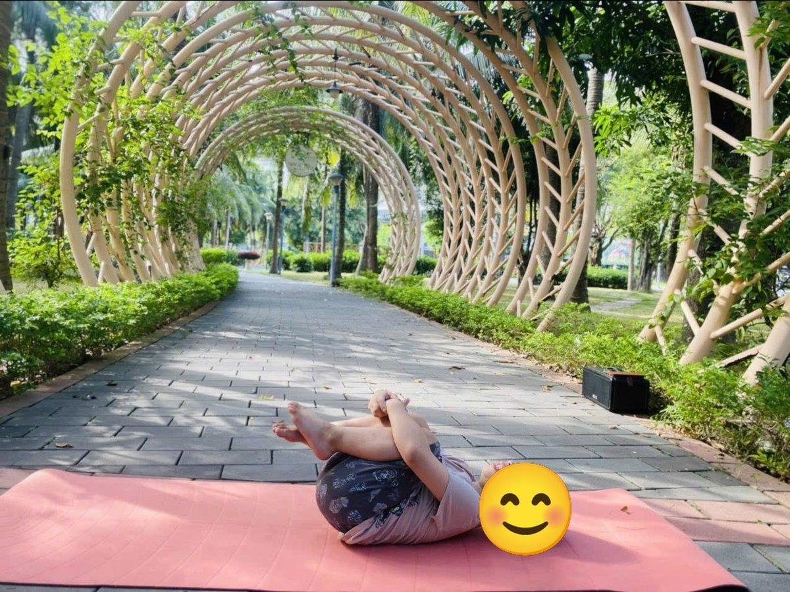

Chủ đề 45 · Phương tiện giao thông
Đoàn tàu nhỏ đi khắp nơi
🌟 Bài học trong câu chuyện
Giới luật yoga: Tapas – Kiên trì, cố gắng. Bé không bỏ cuộc, thử lại từng chút một.
Kỹ năng sống: Biết các phương tiện giao thông, không bỏ cuộc.
1. Khởi động (2 phút)
Cả lớp ngồi xếp bằng thành vòng tròn. Cùng thở 3 hơi thở bông hoa: hít vào bằng mũi như ngửi hoa, thở ra bằng miệng thật chậm. Chắp tay trước ngực và chào nhau: “Namaste, chào các bạn!”
2. Câu chuyện: Đoàn tàu nhỏ đi khắp nơi (đọc cho bé nghe, 4 phút)
Cô đọc trọn câu chuyện cho bé nghe trước. Sau đó cô kể lại từng đoạn ngắn và cả lớp cùng tập 10 tư thế ở phần bên dưới.
Đoàn Tàu Nhỏ được giao một nhiệm vụ quan trọng: chở quà đến cho các bạn nhỏ ở ngôi làng bên kia núi. Tàu Nhỏ chạy "xình xịch, xình xịch" ra khỏi ga.
Trên đường, Tàu gặp bạn Ô Tô bấm còi "bim bim" chào. Máy Bay bay ngang trời: "Cố lên Tàu Nhỏ!". Thuyền trên sông vẫy tay. Bạn Xe Đạp đạp thật đều theo một đoạn. Trực thăng quay cánh quạt "phành phạch" trên đầu.
Đến chân con dốc cao, Tàu Nhỏ thở hổn hển. "Dốc cao quá, mình không lên nổi đâu!". Tàu định quay về. Nhưng Tàu nghĩ đến các bạn nhỏ đang chờ quà.
Tàu hít một hơi thật sâu, rồi vừa leo vừa nói: "Mình nghĩ mình làm được. Mình nghĩ mình làm được!". Tàu leo từng chút, từng chút một, qua cây cầu cao, chui qua đường hầm tối.
Cuối cùng, Tàu Nhỏ lên đến đỉnh dốc! Tàu lao xuống bên kia núi nhanh như tên lửa. Các bạn nhỏ trong làng reo hò nhận quà. Tàu Nhỏ mệt nhưng vui lắm: "Không bỏ cuộc, mình đã làm được!"
3. Kể lại và tập 10 tư thế (6 phút)
-
 1
1Ô tô
🧘 Tư thế Ngồi xoay người (Seated Twist)
Lời kể khi tập: Ô tô bấm còi "bim bim", xoay vô lăng.
Cách làm: Ngồi xếp bằng, một tay đặt lên gối đối diện, tay kia chống phía sau, xoay người nhìn ra sau. Đổi bên. Giữ 3 đến 5 nhịp thở.
-
 2
2Đoàn tàu
🧘 Tư thế Gập người ngồi (Seated Forward Fold)
Lời kể khi tập: Đoàn Tàu Nhỏ chạy "xình xịch, xình xịch".
Cách làm: Ngồi duỗi thẳng hai chân, hít vào vươn tay lên, thở ra cúi người về trước, tay với về phía ngón chân. Giữ 3 đến 5 nhịp thở.
-
 3
3Máy bay
🧘 Tư thế Máy bay (Warrior 3)
Lời kể khi tập: Máy bay bay ngang trời: "Cố lên Tàu Nhỏ!"
Cách làm: Đứng trên một chân, nghiêng người về trước, chân kia duỗi thẳng ra sau, hai tay dang như cánh máy bay. Cô có thể đỡ nhẹ chân sau giúp bé giữ thăng bằng như trong ảnh, hoặc bé vịn tường. Giữ 3 đến 5 nhịp thở.
-
 4
4Con thuyền
🧘 Tư thế Con thuyền (Boat)
Lời kể khi tập: Thuyền trên sông vẫy chào.
Cách làm: Ngồi, co gối, ngả người ra sau một chút, nhấc hai chân lên, tay duỗi ra trước. Làm đôi như trong ảnh: hai bạn ngồi đối diện, áp bàn chân vào nhau, nắm tay nhau, cùng nhấc chân lên. Giữ 3 đến 5 nhịp thở.
-

5Xe đạp
🧘 Tư thế Đạp xe (Bicycle)
Lời kể khi tập: Bạn Xe Đạp đạp thật đều theo Tàu Nhỏ.
Cách làm: Nằm ngửa, co hai chân lên sát ngực, rồi đạp xe trên không thật đều. Giữ 3 đến 5 nhịp thở.
-
 6
6Trực thăng
🧘 Tư thế Đứng xoay người (Standing Twist)
Lời kể khi tập: Trực thăng quay cánh quạt "phành phạch".
Cách làm: Đứng dang rộng tay chân, xoay người sang trái, sang phải như cánh quạt. Giữ 3 đến 5 nhịp thở.
-
 7
7Tàu ngầm
🧘 Tư thế Rắn hổ mang (Cobra)
Lời kể khi tập: Đến chân dốc cao, Tàu Nhỏ mệt quá: "Mình không lên nổi!"
Cách làm: Nằm sấp, chống hai tay (hoặc hai khuỷu tay) dưới vai, nâng ngực lên, phát tiếng xì xì như rắn. Giữ 3 đến 5 nhịp thở.
-
 8
8Cây cầu
🧘 Tư thế Cây cầu (Bridge)
Lời kể khi tập: Tàu Nhỏ hít thật sâu: "Mình nghĩ mình làm được, mình làm được!"
Cách làm: Nằm ngửa, co gối, bàn chân đặt trên sàn, nâng hông lên cao như cây cầu. Giữ 3 đến 5 nhịp thở.
-
 9
9Đường hầm
🧘 Tư thế Chó úp mặt (Downward Dog)
Lời kể khi tập: Tàu Nhỏ lên dốc từng chút, qua đường hầm tối.
Cách làm: Chống hai tay và hai chân xuống thảm, nâng mông lên cao, người thành hình tam giác. Giữ 3 đến 5 nhịp thở.
-
 10
10Tên lửa
🧘 Tư thế Tên lửa (Rocket)
Lời kể khi tập: Tàu Nhỏ lên đến đỉnh! Các bạn nhỏ trong làng reo vui nhận quà.
Cách làm: Đứng thẳng, hai tay vươn cao chụm lại trên đầu, kiễng chân, đếm 3-2-1 rồi nhún nhẹ như phóng lên. Giữ 3 đến 5 nhịp thở.
4. Thư giãn (2 phút)
Các con nằm ngửa, tay chân thả lỏng, nhắm mắt lại. Cô nói nhẹ: “Hít vào thật chậm… thở ra thật chậm… Con nhớ lại câu chuyện vừa rồi, nhớ người bạn mình thích nhất trong truyện. Cơ thể con mềm như bông, nhẹ như mây.” Sau đó các con nghiêng người, từ từ ngồi dậy.
5. Trò chuyện cùng bé (1 phút)
Tàu Nhỏ mệt nhưng không bỏ cuộc, cứ cố gắng từng chút. Kiên trì là Tapas.
Cô hỏi các con:
- Con đã đi những phương tiện nào?
- Khi mệt, con có cố gắng thêm chút nữa không?
Kết thúc bằng lời chào “Namaste” và một nụ cười.
Lưu ý cho thầy cô và bố mẹ: Tập trên thảm, không tập ngay sau khi ăn no. Bé chỉ làm tới mức thấy dễ chịu, không ép bé. Tư thế đứng một chân có thể cho bé vịn tường hoặc vịn tay người lớn.